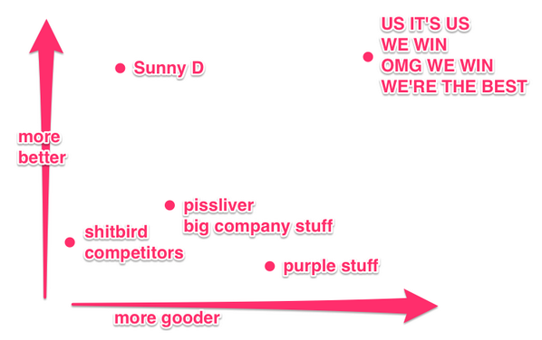
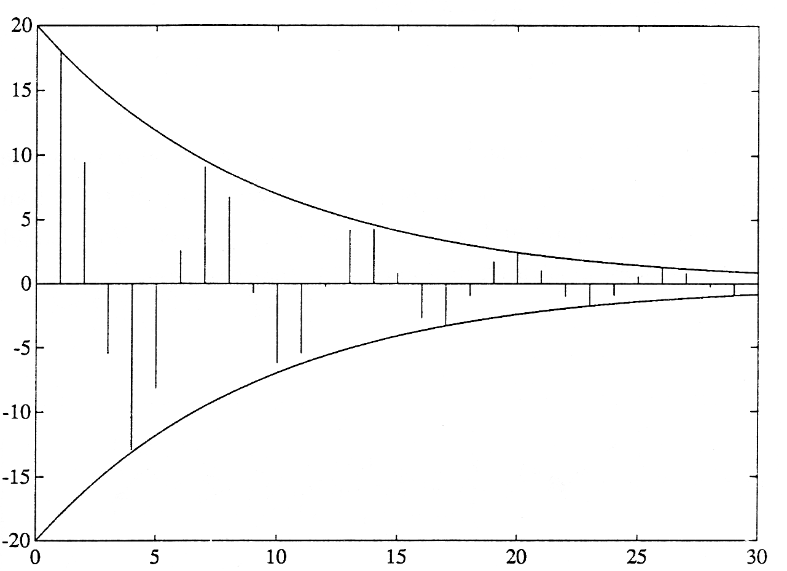

How To Give
A Good
Technical Talk
subtitle
“A Good Technical Talk”
Content First
No Pressure
But...
Step 0:
Relax
(Rehearse)
Step 1:
Introduce Yourself
Credential Yourself
(Demonstration)
Why Should You Listen
To A Word That I Say
About This
Topic?
I’ve Given A Lot Of Talks
I’m Also
Very Lazy
<
insert infographic
dramatically demonstrating
laziness here
>
You’re Busy
I’m Busy
Step 2:
Don’t Do This
A Time-Tested Technique
For Being Boring
- Put lots of bullets
- on your slides
- be sure they summarize
- every point you’re going to make
- turn away from the audience
- and read them word for word
- You can tell
- you’re doing it right
- when you have to resort to multiple columns
- and even then
- not all the bullets quite fit
- so you have to start shrinking the font size on some of them
- because it’s really
important to get all those words onto a slide because otherwise
where are you going to read all of them from?
Step 2a
Don’t Do This Either

baby

kitten
Slides Are…
Look At
emphasis

West of House
There is a small mailbox here.
> look at slides
You're already looking at the very droll slides.
All of that was good advice.
But ignore the thing about babies and kittens.
Babies and kittens are adorable.
Go ahead and use them everywhere.
Seriously, who doesn't like babies and kittens?
Step 2: Summary
- Don't put bullets on your slides.
- Don't read the text from your screen.
- Don't put the same text on your slides that
you're going to read.
- Keep in mind slides are a visual aid; keep them interesting.
Step 3
<code>
Make Code
Samples Short
def write(example):
while example.has_unnecessary_lines():
example.delete_those_liens()
Use A
Big Font
def write(example):
while example.has_unnecessary_lines():
example.delete_those_liens()
Test
Your Code
def write(example):
while example.has_unnecessary_lines():
example.delete_those_lines()
Use
Emphasis
def write(example):
while example.has_unnecessary_lines():
example.delete_those_lines(�)
The Audience
Isn’t Looking
At Your Laptop
The Audience Doesn’t
Have Your Code
In An Editor
Use Real Data

coda-hale-marketing-consultant.png
Cite Your Sources
(https://short-links/please)

LABEL YOUR AXES
Get Comfortable
With A Tool
Use Your Existing Tools
emacs, vim, Sublime Text,
git, pygments, grunt,
curl.
reveal.js
http://lab.hakim.se/
reveal-js/
I Am Tech Talk
And So Can You